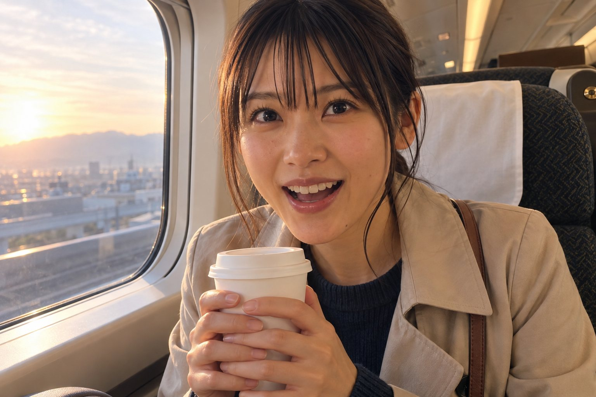
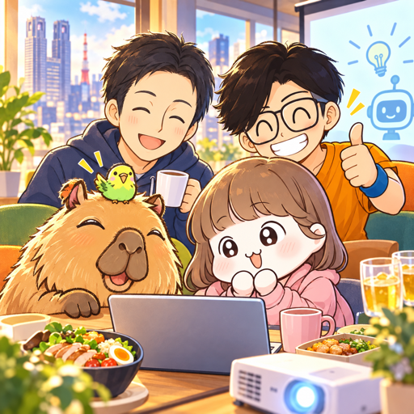
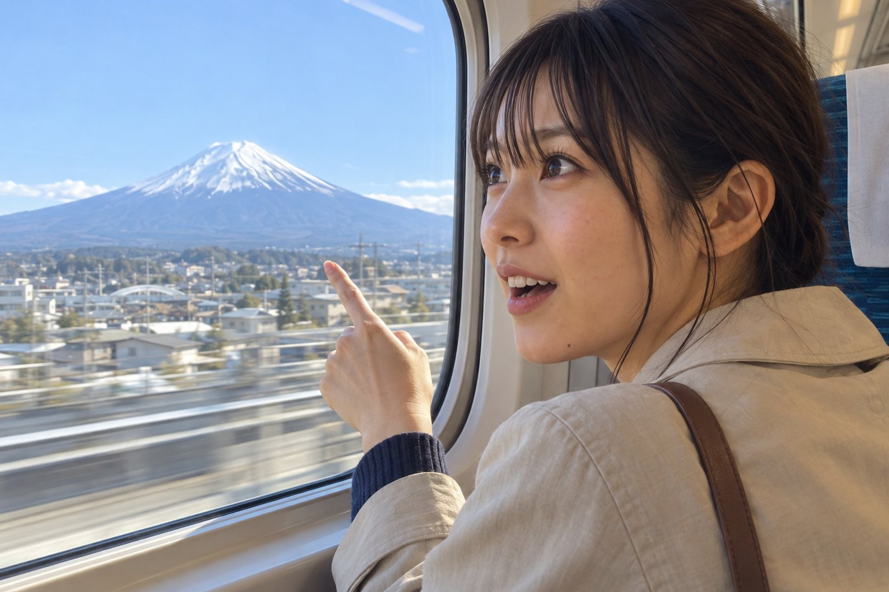
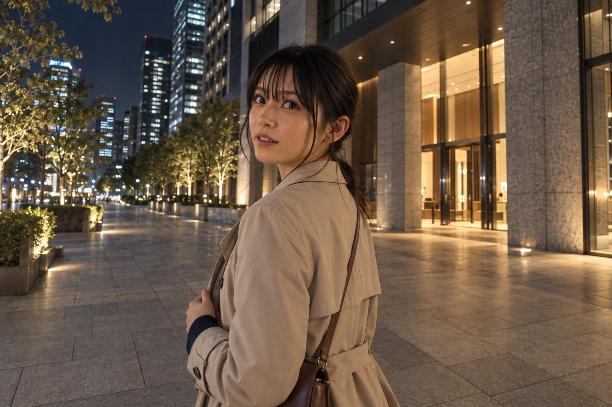
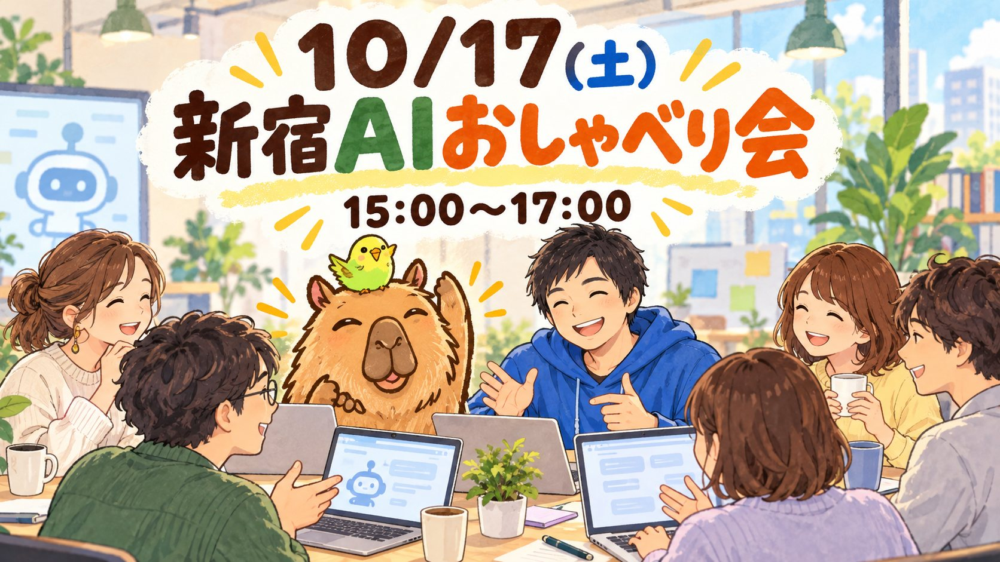
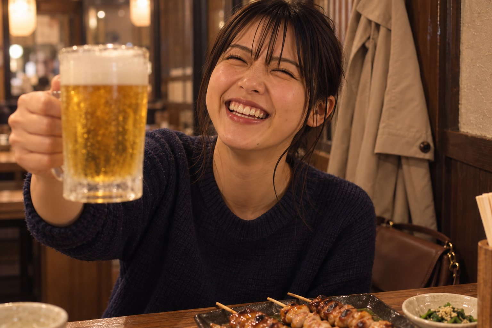

全員集合しなくていい
それぞれの目的を楽しんで、時間が重なったら会おう。自由だからこそ、会えた時間がうれしい旅。
東京／2026年10月
おけもんの東京行きは決定。同じ街にいても、予定はそれぞれ。やりたいことを楽しんで、時間が重なったら会おう。4人をひとつの行程に詰め込まない、ゆるい旅のしおりです。
今回の旅のテーマ段取りはAI社員に。おけもんは、人に会いに行くだけ。

おけもん、みずのさん、ちーちゃん、リンツさん。出発も目的も帰る時間も各自でOK。合流は「全員集合」ではなく、都合の重なる小さな時間だけ。
16〜17日の東京行きは確定。17日の夜勤は休み申請済み。17日夜はそのまま夜行バスで高知へ寄り道、18日に須磨へ。
17日のランチ・勉強会・飲み会の時間割を提案。夜は早めに帰るかも、とLINEで共有。
おけもんと④のぞみ68号で東京へ。16日は昼から、公募前の別オフ会に参加予定。17日ランチ後に帰阪予定。午前のメカさんの会は参加申請済み。
16日14時のもくもく会（共催）・16日夜ごはん・17日ランチに参加。17日はランチ後に帰宅（午後のAIオフ会・夜の飲み会は不参加）。メカさんの会は見送り。

旅の作戦会議室。行きたい場所、食べたいもの、合流できそうな時間を持ち寄って、予定が重なったところで遊ぼう。
予約済み もう安心して楽しめる予定お楽しみ みんなで相談して育てる予定
05:02発の京都行き。大阪05:53着→05:54発の快速に乗り換えると新大阪05:58着、そのまま乗っていても06:03着。これを逃すと06:33に間に合わないので、ここだけは早起き勝負。
寝坊注意ちょうど新大阪のホームにいる時間。電車の中から耳だけ参加するか、この日はお休みにするか、気分で。
お好みで新大阪から品川まで2時間17分。8号車6A・6Bの隣席でゆっくり朝旅を楽しんで、山手線で新宿へ。オフィスには09:31ごろ到着予定です。

おけもんのオフィス予約は確保済み。新宿に着いたら、コーヒーを片手に今日の予定をゆるっとスタート。
予約済み無料・3〜4人の班で50分×2回。1回目はおけもん・AIわっしーさん（同じ班のかなこさんが10/14にキャンセルしたので2人になりそう。LINE構築×AI伴走の人）。2回目はねずはなさん・HIITさん・タツヤさん。HIITさんは「毎朝4時に経営報告が届くAI社員」を作った一級建築士で、今回いちばん話が噛み合いそうな人。ちーちゃんはB班。みあっちさんとは久しぶりの再会。7/27に作ったメカさんの取扱説明書は、まだ渡していません。
参加申請済みまだ公募前の会へ参加予定。10:00〜12:00の1Passwordオフ会とは全く別のイベントです。
公募前りんつさんと14:00〜17:00のもくもく会を開催。定員8人で受付終了。ゆりかさんから欠席の連絡があったので、来るのは最大7人。50分作業＋10分休憩・入退室自由。オフィス予約は18時まで確保。参加チャット
受付終了おけもん・ちーちゃん・かっぱちゃん・メカさん・りんつさん・あねごの6人。禁煙テーブル席、3時間ワイン飲放・全8品、チャージ込み1人5,500円。
予約済み東京初日の締めは品川サウナ。しっかり温まって、翌日のみずやん参りへ備えます。
予約済み品川サウナで目覚めたら、いつもの朝の会へ。場所は当日チャットで。
お好みで無料のオンライン（Substack Live）。申込済み。録画があるので、移動中なら後から見てもOK。
申込済みおけもん・ちーちゃん・みずのさん・りんつさん・ジューンさんの5人で、ハヌリ新宿西口店へ。禁煙完全個室・席のみ・2時間で予約済み。
ハヌリ予約済みおけもんのオフィス予約は確保済み。ランチが終わったら、みずの先生とAIで遊ぶ午後へ。
予約済みプロジェクターをつないで、見せたいものを持ち寄る時間。何が始まるか分からないくらいが、ちょうど面白い。
わくわく準備おけもん・みずのさん・おかはるさん・ひとやすみちゃんの4人。焼き鳥コース9品＋2時間飲み放題。オフィスから歩いてすぐ。お店の情報はチャットに投稿済み（10/15）。
予約済みちーちゃん、みずのさん、リンツさんも、自分のペースで。また次に会う楽しみを残して解散です。
自由解散はるかの最初のムービーの舞台。場所は大手町タワー（千代田区大手町1-5-6）のてっぺん33〜38階。すみれを20:00に出て、新宿20:12発の中央線快速で東京駅へ（15分ほど）→ 丸の内北口から歩いて5分。ビルの足もとには「大手町の森」という本物の森があるので、森の中を通ってタワーを見上げてから、1階のアマン東京の入口からエレベーターで33階のロビーへ。天井が約30mある吹き抜けで、泊まっていなくても「ザ・ラウンジ by アマン」は使えます（るるぶの掲載では11〜22時・ラストオーダー21時）。ドレスコードは見つからなかったので、焼き鳥のにおいだけ少し気にしつつ🤣 地下鉄なら大手町駅から地下でつながっています。

ロビーで15分くらい過ごして20:55ごろに出れば、東京駅を丸の内側から八重洲側へ抜けてバスターミナルへ（15分ほど）。21:10ごろに着いて、21:30発に間に合います。ラウンジで一杯飲むなら、バスの時間だけ気をつけてね。
気分で寄り道BT東京八重洲（地下）21:30発 → JR高知駅北口 07:50着。すみれを20:00に出れば、中央線で東京駅まで15分ほどなので間に合います。18日は高知を楽しんで、15:40発の高知EXPで高速舞子19:36着、JR須磨へ。バスは2本とも支払い済み・発券済み（10/3）。
支払い済みそれぞれの目的を楽しんで、時間が重なったら会おう。自由だからこそ、会えた時間がうれしい旅。
AI、ランチ、サウナ、街歩き。予定表の余白に、その日だけの偶然を入れていこう。
10/17(土)12:00〜14:00、おけもん・ちーちゃん・みずのさん・りんつさん・ジューンさんの5人。ハヌリ新宿西口店の禁煙完全個室を食べログで予約済みです。
西新宿1-15-4 第2セイコービル2F。新宿西口オフィスの近く。席のみ・滞在2時間・個室料なし。
1人税込2,000円以内のランチセットを予定し、予算希望を予約時に記入済み。当日会計。無連絡の当日キャンセルは1人3,000円です。
9/30に予約確認ページを再取得し、来店前の保存済み予約を確認しました。

15時になったら、みずのさんを囲んでAIトーク開始。初心者も詳しい人も、最近試したことや「これ何に使える？」を持ち寄って、ゆるく一緒に遊びます。
プロジェクターとスクリーンを使って、気になるAIや作品をその場で披露。見るだけ参加も大歓迎の空気で。
おけもんの新宿西口オフィス予約は13:00〜18:00。ランチ後から準備して、15:00〜17:00のオフ会をたっぷり楽しめます。

オフ会のあとは、おけもん・みずのさん・おかはるさん・ひとやすみちゃんの4人で焼き鳥。18:00〜20:00、今日のAI話の続きを。
東京都新宿区西新宿1-12-7 第二清新ビル4F。新宿駅から徒歩5分ほど、新宿西口オフィスからもすぐ。禁煙テーブル席。
1人4,000円（税込）。お通し440円がかかるかもしれないので、4,500円くらいを目安に。キャンセル料は前日50%・当日100%。
10/14に3人→4人へ変更（本人報告）。Googleカレンダーの説明欄はまだ「3人」のまま。ご飯会チャットに当日の情報を投稿済み（10/15 06:36）。
行きはちーちゃんとグリーン車、泊まりは品川サウナ、帰りは夜行バスで高知に寄り道。足はぜんぶ確保済み。
のぞみ68号：新大阪06:33発 → 品川08:50着。EX早特3グリーン車、8号車6A・6B。
2人合計33,120円。ちーちゃんの「お願い！」を受けて予約完了。朝から旅のおしゃべり席ができました。
初日の締めは、お風呂とサウナでゆっくり。翌日のみずやん参りに向けて、体力をフル充電します。
FLATON：BT東京八重洲21:30 → JR高知駅北口07:50。高知EXP：高知駅15:40 → 高速舞子19:36。2本とも10/3に支払い済み・発券済み。18日は終日予定を入れない日。
持ち物：ノートPC・充電器・スマホ（作品や取説をその場で見せる用）。16日の経営者オフ会は無料・資料不要。